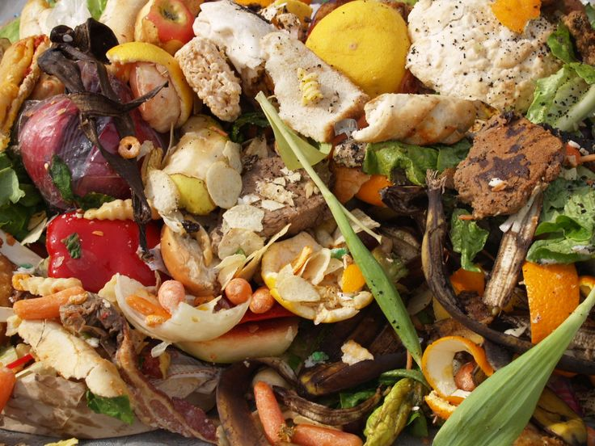
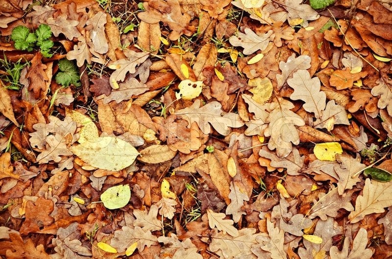

Sampah Plastik


Ini adalah sampah plastik yang dapat dijual di kami.
Sampah Kertas


Ini adalah jenis sampah Kertas yang dapat dijual di kami.
Sampah Elektronik


Ini adalah jenis elektronik bekas yang dapat dijula di kami dan adapaun yang.
Sampah Organik
 Sampah organik seperti sisa makanan dan dedaunan dapat kami kelolah kembali untuk menjadi pupuk.